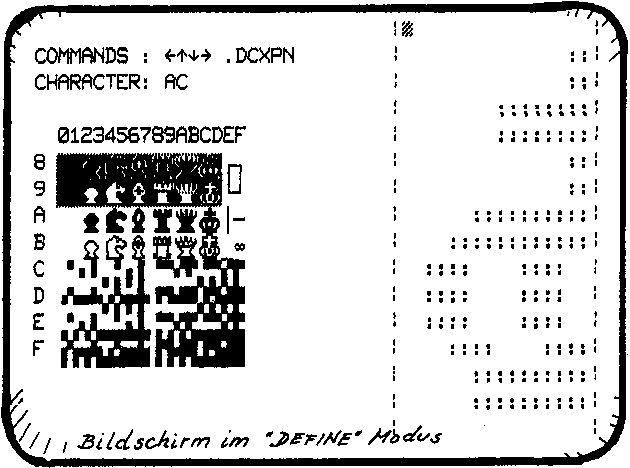
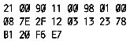

Nascom Journal |
März/April 1982 · Ausgabe 3/4 |
Viele Beitraege im Nascom-Journal befassten sich in letzter Zeit mit der Erzeugung von Graphik, und ich will hier keine Ausnahme machen. Normalerweise wird die Nascom-Graphik ueber einen zweiten Zeichensatz erzeugt, der in einem 2k-Eprom gespeichert ist. Umgeschaltet zwischen erstem und zweitem Zeichensatz wird ueber Bit 7 des Video-RAM.
So weit, so gut; bald wird man sich jedoch wünschen, man haette mehr Zeichen zur Verfuegung als die 128 zusaetzlichen. Die BASIC – Blockgraphik beansprucht 64 Zeichen, die Schach Graphik 64 weitere,Indizes und mathematische Sonderzeichen nochmal 64, und ein griechisches Alphabet waere auch nicht schlecht. Die beste Loesung ist ein Zeichensatz, der sich beliebig softwaremaessig definieren laesst.
laesst. Der Zeichengenerator muss also ein RAM sein,auf das von der CPU zugegriffen werden kann. Es erweist sich als sinnvoll, auch ein Lesen aus dem Grafik-RAM zuzulassen.
Die hier vorgestellte Schaltung erweitert den Nascom-Zeichengenerator von 2k auf 4k. Der erste Teil ist der originale Nascom 1 Zeichengenerator , der zweite Teil ein 2k RAM. Als ich die Schaltung vor 2 Jahren aufbaute,nahm ich vier 2114’er; heute waere vermutlich ein 6116’er guenstiger. Der Zeichengenerator mit nachgeschaltetem Buffer laesst sich auch durch ein entsprechend programmiertes Eprom ersetzen. Dann kaeme die Schaltung mit 7 IC’s aus. Die ganze Logik ist auf einer Lochrasterplatte auf der RAM-Karte aufgebaut. Dort ist genuegend Platz direkt am Busstecker, wo auch die Adressen- und Datenleitungen sehr schoen zugaenglich sind. Die Verbindung zur Nascom-Grundplatine erfolgt ueber ein Kabel mit 24-poligem Stecker, der in die Fassung des Zeichengenerators eingesteckt wird. Zusaetzlich muss noch eine Verbindung zwischen folgenden IC’s hergestellt werden:
IC 20 Pin 12 – IC 17 Pin 18
IC 17 Pin 19 – IC 16 Pin 10
IC 16 Pin 14 – IC 15 Pin 6;von Masse abtrennen!
Mit der gewaehlten Dekodierung liegt der Grafik-RAM-Bereich von 9000 – A000. Die folgenden Programme sind fuer diese Dekodierung ausgelegt.
Wenn die Schaltung eingebaut ist, kann man mit der Grafik-Taste (Bit 7 gesetzt) die 128 frei definierbaren Zeichen auf den Schirm bringen. Zunaechst wird man nur wirres Gekringel sehen, da noch nichts vernuenftiges im RAM steht. Sie koennen nun Ihre Grafik testen, indem Sie eingeben:
I 9000 9800 800
Dies kopiert den normalen Zeichensatz ins RAM. Folgendes kleine Programm erzeugt invertierte Zeichen:
Anschliessend noch zwei weitere Programme.
BSET erzeugt die BASIC- Blockgrafik und ist auf jeder Adresse lauffaehig. Mit DEFINE koennen Sie Ihren eigenen Zeichensatz definieren. Nach dem Start auf Adresse D00 wird der Bildschirm aufgeteilt ( siehe Bildschirmausdruck); links steht der komplette Zeichensatz, rechts koennen Sie einzelne Punkte in einem Zeichen setzen oder loeschen. Sie haben folgende Befehle zur
| Seite 20 von 52 |
|---|